WSL2でUbuntu・Fedoraを使用する
・WSL2について
Windows上でLinuxを動かすとき、大抵の場合VirtualBoxやVMWare、またはWindowsのHyper-Vなどの仮想マシン上に目的のOSをインストールすることになるが、"Windows Subsystem for Linux 2"(WSL2)という機能でWindows上で簡易的にLinuxを動かすことができる。
VirtualBoxの時などとは異なり、共有フォルダーの設定をしなくてもゲストOSとホストOS間でファイルのやり取りが行えるので非常に助かる場合がある。今回はWindows10上のWSL2の導入方法とUbuntu、Fedoraのインストール法を解説する。(Windows11は手持ちの電算機にはないので今回は解説しない。)
VirtualBoxの時などとは異なり、共有フォルダーの設定をしなくてもゲストOSとホストOS間でファイルのやり取りが行えるので非常に助かる場合がある。今回はWindows10上のWSL2の導入方法とUbuntu、Fedoraのインストール法を解説する。(Windows11は手持ちの電算機にはないので今回は解説しない。)
・WSL2のインストール
Windows10においてWSL2をインストールするときのwindowsのバージョンは、x64の中央処理装置では1903以降、ARM64は2004以降であることが必要になる。32bitの電算機では残念ながらインストールは(少なくとも正攻法では)できない。
適宜な更新が済んだら、まずwindowsの機能を拡張する。
①Windowsキー+Rを押し、controlと入力。
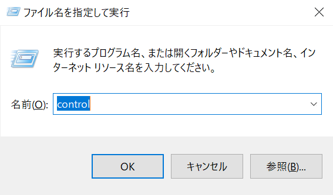
②コントロールパネルが開かれるので、プログラム→Windowsの機能の有効化または無効化の順に進む。
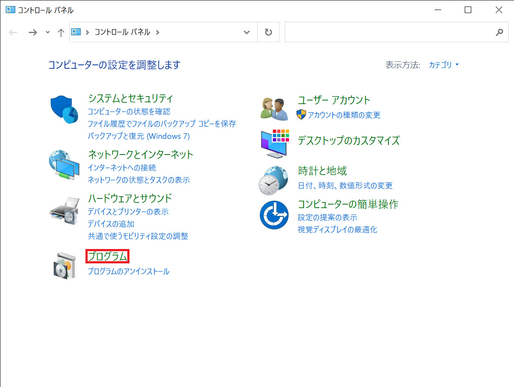 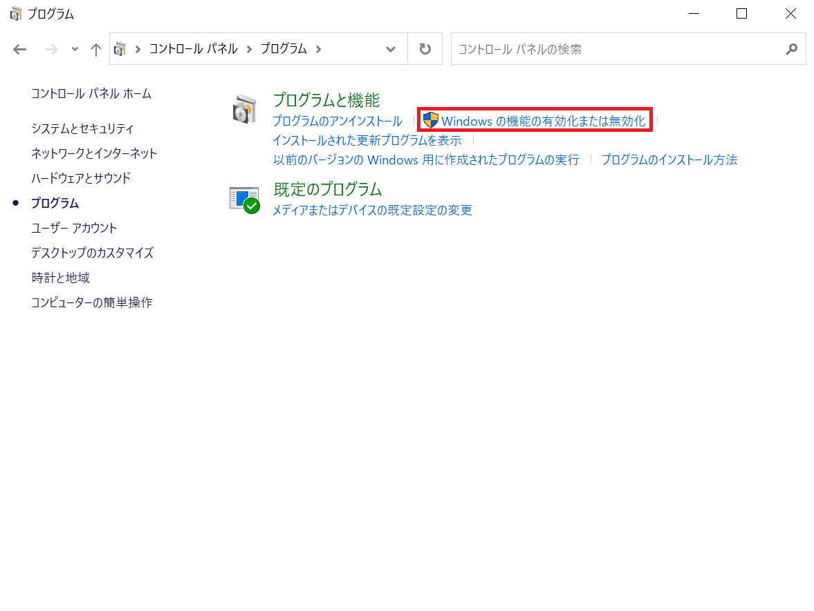
③Linux用Windowsサブシステム・仮想マシンプラットフォームにチェックを入れる。この後再起動が促されるのでそれに従う。
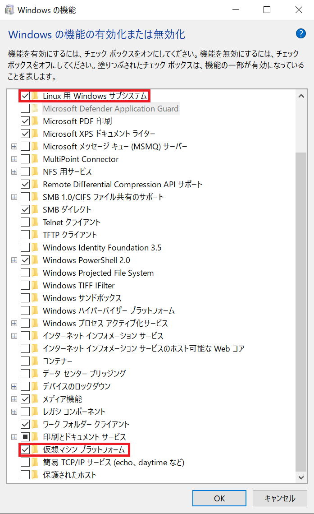
④次に、MSのサイトからLinux用カーネルをダウンロードし、インストールする。以下のような画面になれば成功。
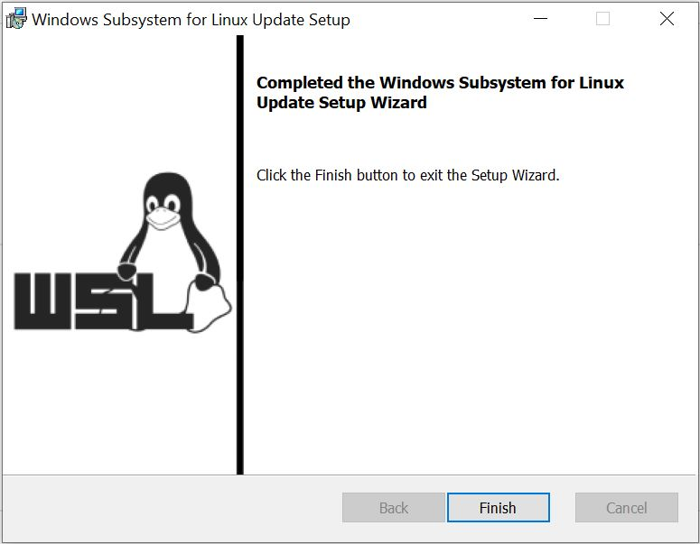
⑤最後に、WSLのバージョンを2に変更するため、Powershellで
wsl --set-default-version 2
を入力し、実行する。
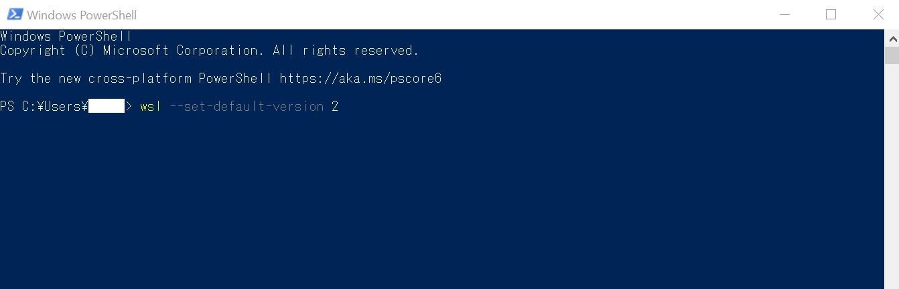
以上でWSL2の導入は完了するので、この先はOSをインストールする。
適宜な更新が済んだら、まずwindowsの機能を拡張する。
①Windowsキー+Rを押し、controlと入力。
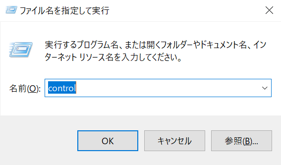
②コントロールパネルが開かれるので、プログラム→Windowsの機能の有効化または無効化の順に進む。
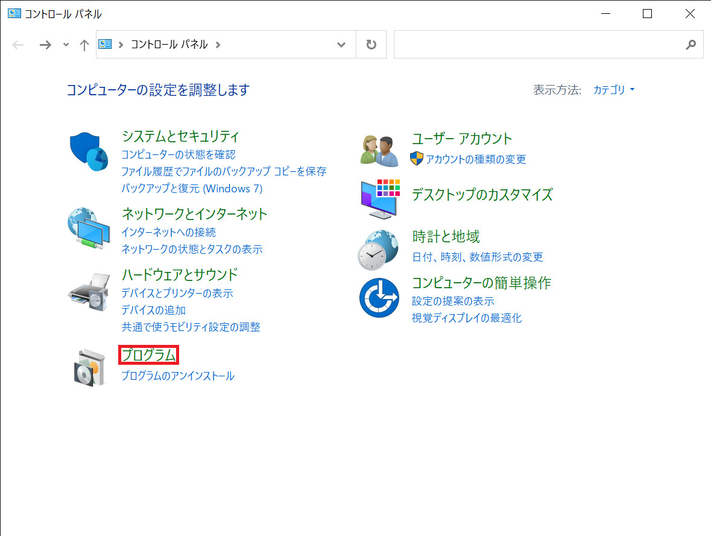 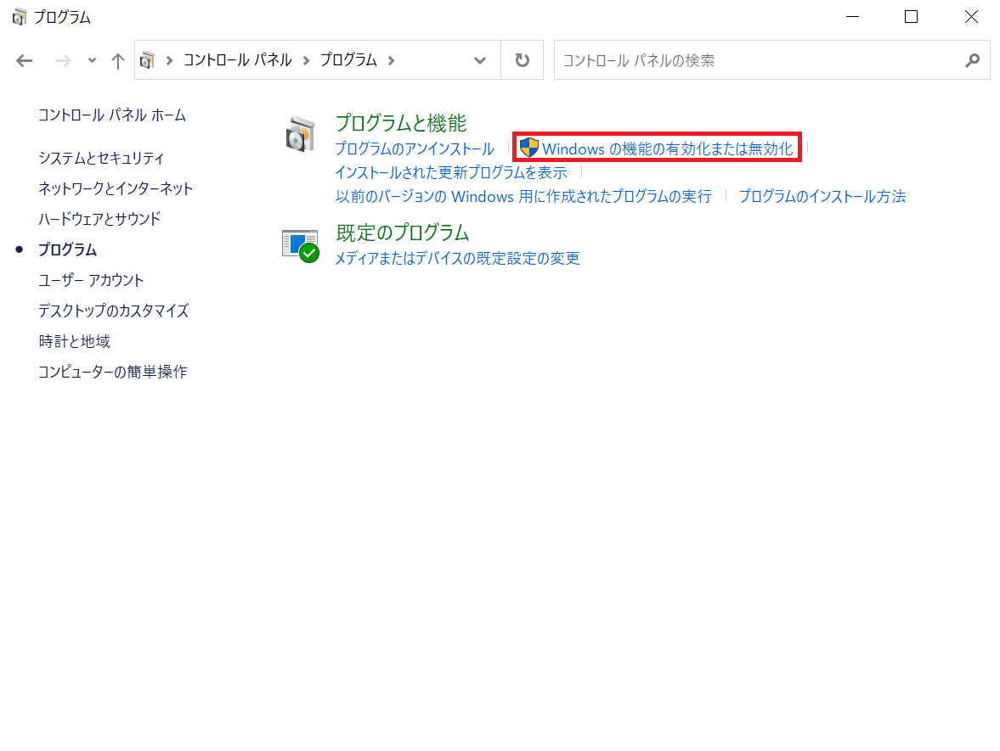
③Linux用Windowsサブシステム・仮想マシンプラットフォームにチェックを入れる。この後再起動が促されるのでそれに従う。
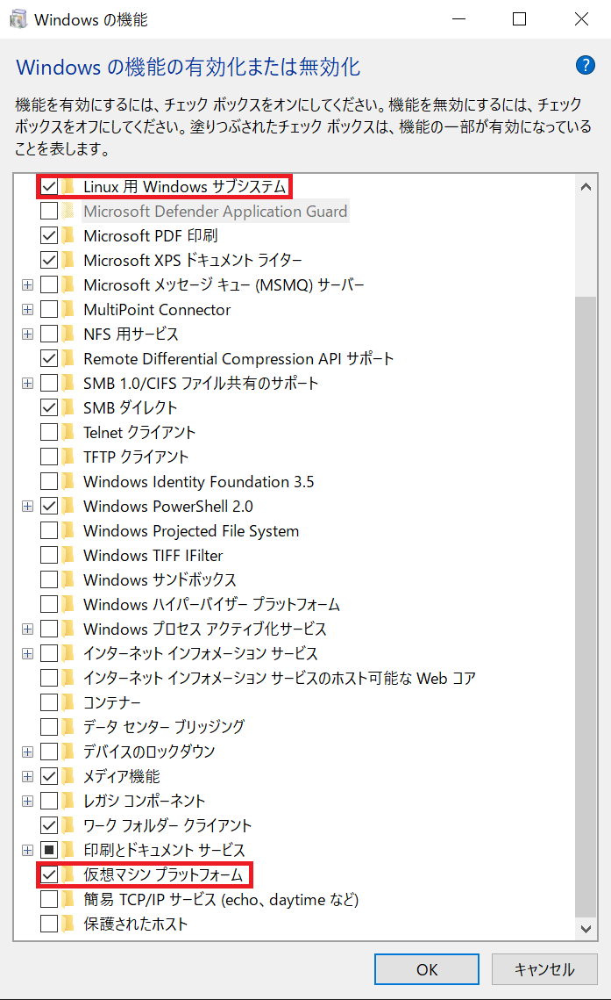
④次に、MSのサイトからLinux用カーネルをダウンロードし、インストールする。以下のような画面になれば成功。
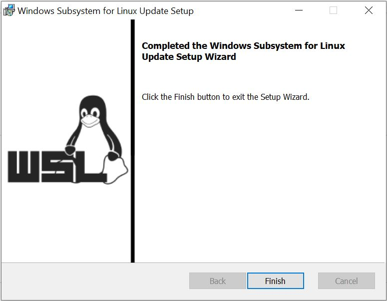
⑤最後に、WSLのバージョンを2に変更するため、Powershellで
wsl --set-default-version 2
を入力し、実行する。
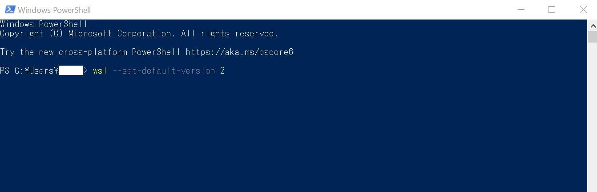
以上でWSL2の導入は完了するので、この先はOSをインストールする。
・Ubuntuのインストール
①MS Storeを開き、Ubuntuを検索しインストールする。ここでは、Windows Terminalというコマンドプロント・Powerchell・Ubuntuを一括管理できるターミナルも入れる。
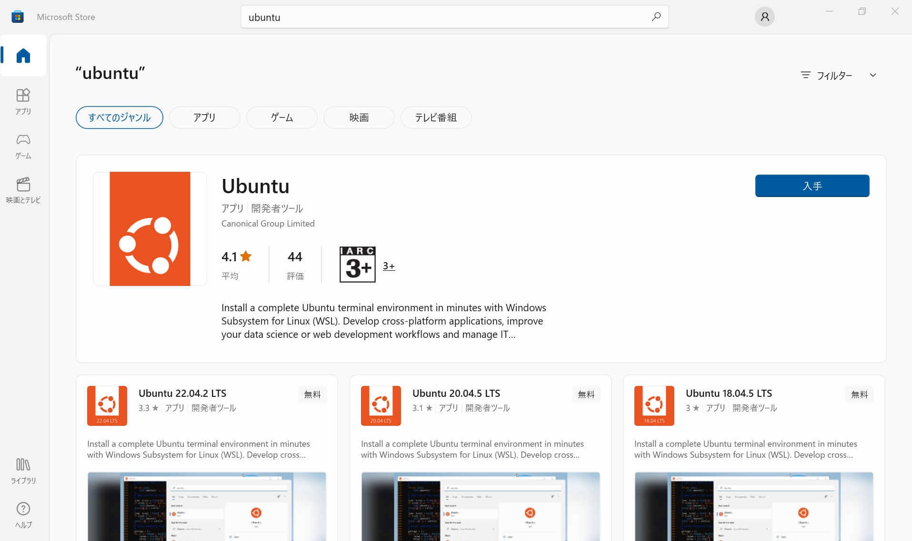
②Ubuntu(またはWindows Terminalのプラスボタンの右のボタンよりUbuntu)を開いてユーザー名、パスワードを設定すれば完了。
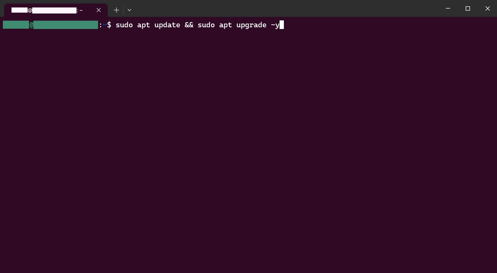
あとは、普通に使えば良いので、ここでは試しにneofetchを入れてみる。
通常は
sudo apt update && sudo apt install neofetch
で、インストールができるが、ディスク領域を圧迫したくないときは、
sudo apt update && sudo apt install neofetch --no-install-recommends
で、推奨パッケージのインストールをケチるという手がある。
これでneofetchを実行すると、

という感じでUbuntuのロゴのアスキーアートが表示される。(しっかりWindows上で動いているということまで表示される。)
因みに、windows上のファイルにアクセスしたい場合は、例えばCドライブのときは、
cd /mnt/c/
でアクセス出来る。
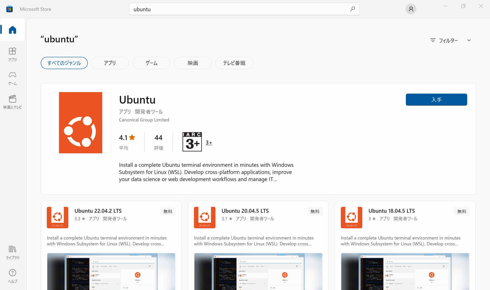
②Ubuntu(またはWindows Terminalのプラスボタンの右のボタンよりUbuntu)を開いてユーザー名、パスワードを設定すれば完了。
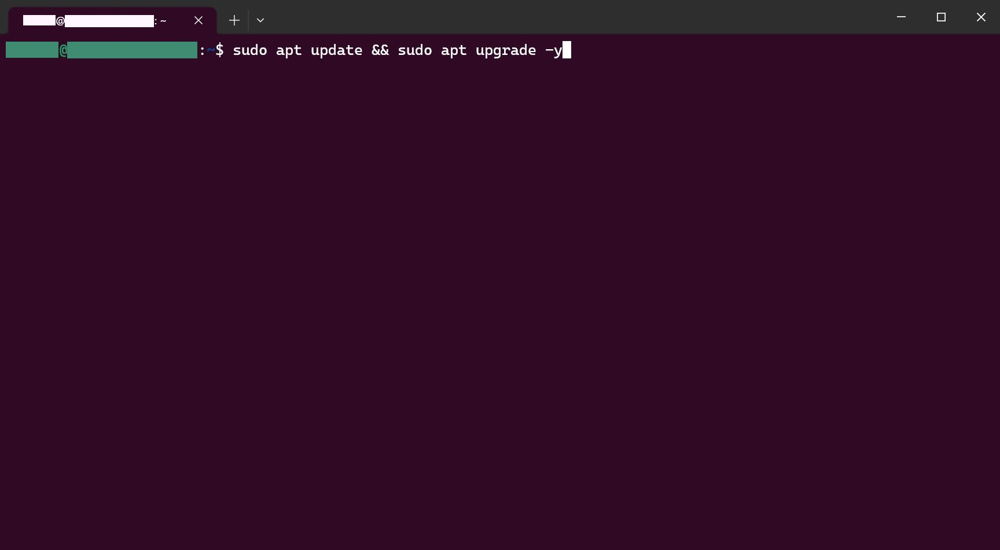
あとは、普通に使えば良いので、ここでは試しにneofetchを入れてみる。
通常は
sudo apt update && sudo apt install neofetch
で、インストールができるが、ディスク領域を圧迫したくないときは、
で、推奨パッケージのインストールをケチるという手がある。
これでneofetchを実行すると、
という感じでUbuntuのロゴのアスキーアートが表示される。(しっかりWindows上で動いているということまで表示される。)
因みに、windows上のファイルにアクセスしたい場合は、例えばCドライブのときは、
cd /mnt/c/
でアクセス出来る。
・Fedoraのインストール
最新の技術を試したい人や、RedHatなどを使い慣れたベテランであれば、Fedoraをインストールしたいかもしれない。しかし、Debian、OpenSUSE、KaliLinuxなどと異なり、Fedora(Remix)はMS Storeでは有料となっている。
然し、開発元のGithubのIsn't fedora free?を見ると一応無料版も公開されていることが分かる。ここからダウンロードできるmsixbundleファイルをインストールすれば、fedoraの導入も可能であるということだ。
然し、開発元のGithubのIsn't fedora free?を見ると一応無料版も公開されていることが分かる。ここからダウンロードできるmsixbundleファイルをインストールすれば、fedoraの導入も可能であるということだ。
・追記(2023/04/20)
Windows 10のより最新のバージョン(22H2以降?)やWindows 11ではより簡単にインスト－ルできる模様。
あと、wsl --updateを実行しないとGUIのLinuxアプリケーションが動かない。但し、Win10の場合は22H2かそのぐらいのバージョンでないとエラーが出るので参考までに。
あと、wsl --updateを実行しないとGUIのLinuxアプリケーションが動かない。但し、Win10の場合は22H2かそのぐらいのバージョンでないとエラーが出るので参考までに。
・参考
記事作成日:2023/03/25
最終更新日:2024/09/12
執筆：虚時間fλ
最終更新日:2024/09/12
執筆：虚時間fλ